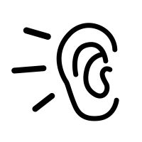
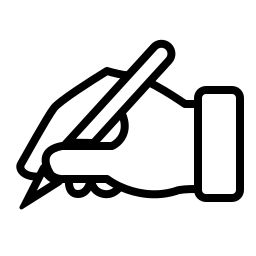
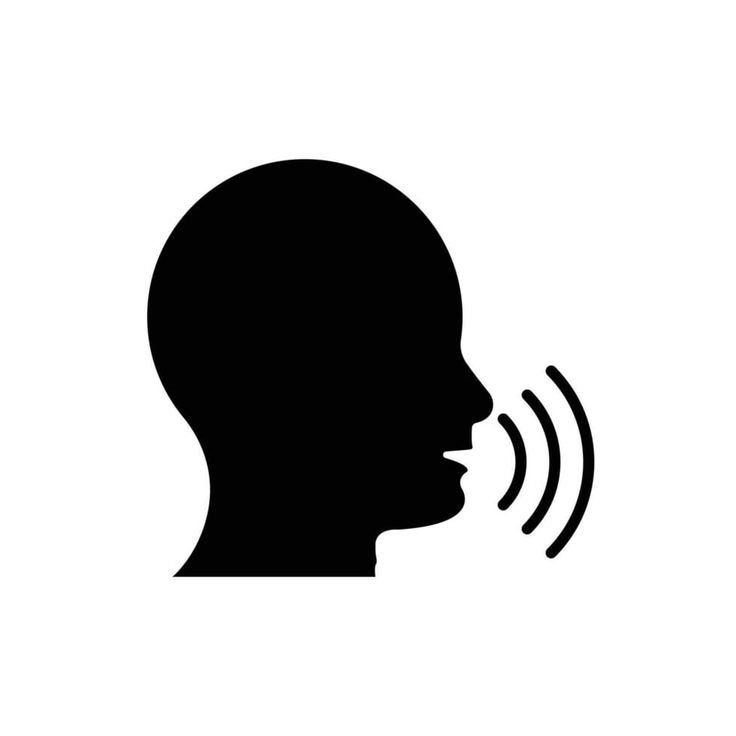

Как подготовиться к экзамену
С чего начать
Сначала нужно понять свой настоящий уровень. Для этого можно пройти тест на сайте, а потом решить официальный пробный вариант экзамена (Modellsatz). Пробные варианты бесплатно есть на сайтах Гёте-Института, telc и TestDaF. Решать пробный вариант лучше по времени и без словаря, тогда будет понятно, каких знаний не хватает и где теряется время.
Не стоит записываться на экзамен сильно выше своего уровня. Чтобы перейти с одного уровня на следующий, обычно нужно 150–250 часов занятий.
План подготовки
1–4 недели. Повторить грамматику, в которой есть ошибки, и каждый день учить 15–20 новых слов. Слушать немецкую речь по 20–30 минут в день: подкасты, новости, видео.
5–8 недели. Разбирать каждую часть экзамена и решать типовые задания. Раз в неделю писать текст и давать его на проверку преподавателю.
9–12 недели. Раз в неделю решать полный пробный экзамен по времени. В последнюю неделю не перегружать себя и нормально спать.
Главное в подготовке – заниматься регулярно. Лучше учить язык каждый день по 30–40 минут, чем один раз в неделю по несколько часов. Также полезно найти собеседника для практики, например через языковой тандем.
Чтение (Lesen)
Сначала лучше прочитать вопросы, а потом сам текст. Не надо стараться понять каждое слово. В тексте ответ обычно написан другими словами, чем в вопросе, поэтому полезно учить синонимы.
Аудирование (Hören)

Перед записью есть время прочитать задания, его нужно использовать, чтобы найти ключевые слова. На уровнях B2 и C1 запись часто включают только один раз, поэтому надо заранее тренироваться на радио, интервью и лекциях.
Письмо (Schreiben)

Нужно знать, как пишется официальное письмо, жалоба и эссе. Можно заранее выучить фразы для начала, середины и конца текста. В конце надо оставить несколько минут, чтобы проверить артикли и порядок слов.
Говорение (Sprechen)

На устной части важно не только говорить без ошибок, но и поддерживать разговор: отвечать собеседнику, задавать вопросы. Если забыл слово, лучше объяснить его другими словами, чем молчать. Готовиться лучше с партнёром или преподавателем.